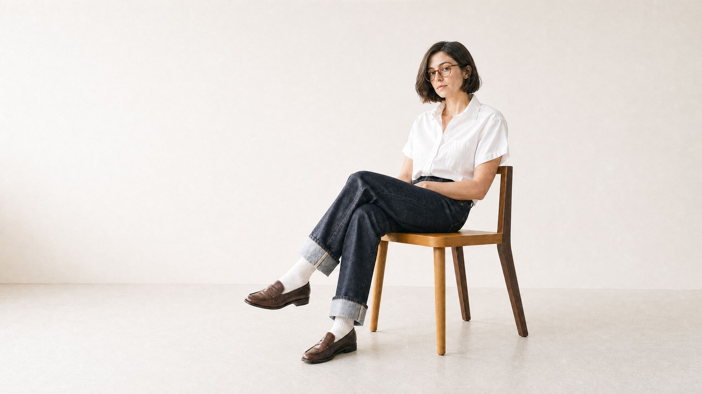
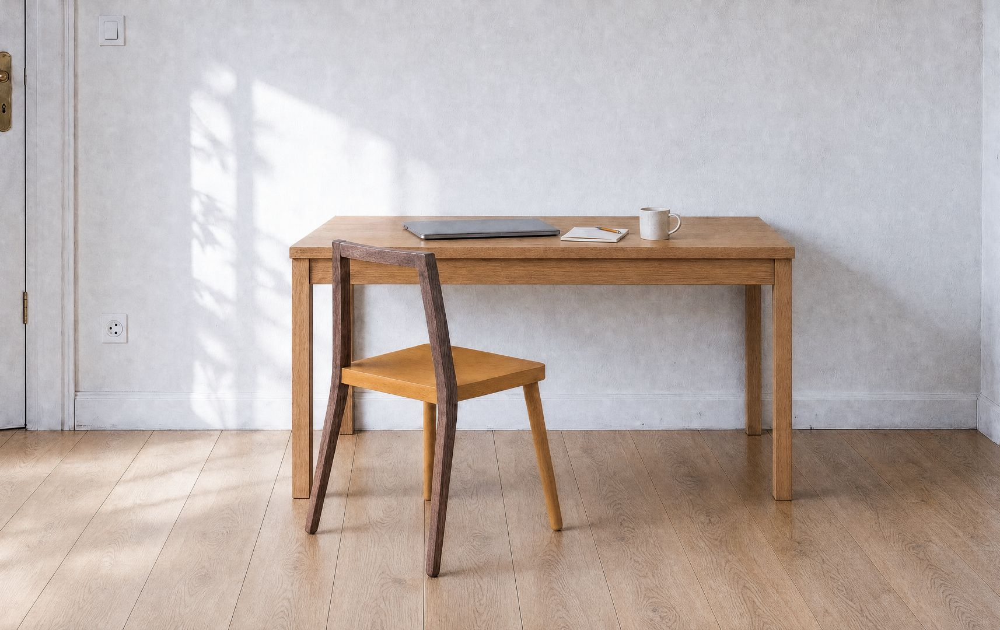

Float
An open frame, a grounded seat, and just enough structure.
Float reduces the chair to a single drawn line of walnut around a softly rounded oak seat — light enough to disappear into a room, precise enough to hold it.

The body
Seat at 450 mm.
The seat height sets the posture. The open walnut frame gives the back somewhere to rest without closing it in — light enough to pull up to the table, steady enough to stay.
Construction
Frame
Solid walnut. Back and rear legs drawn as one continuous line.
Seat
Oak, softly rounded at every edge.
Front legs
Oak, tapered toward the floor.



Drawing

790
mm — overall height
- Height
- 790 mm
- Seat height
- 450 mm
- Width
- 480 mm
- Depth
- —
- Frame
- Solid walnut
- Seat
- Oak
- Finish
- Natural oil
The collection, same angle

TotemView →

ShardView →
FloatCurrent